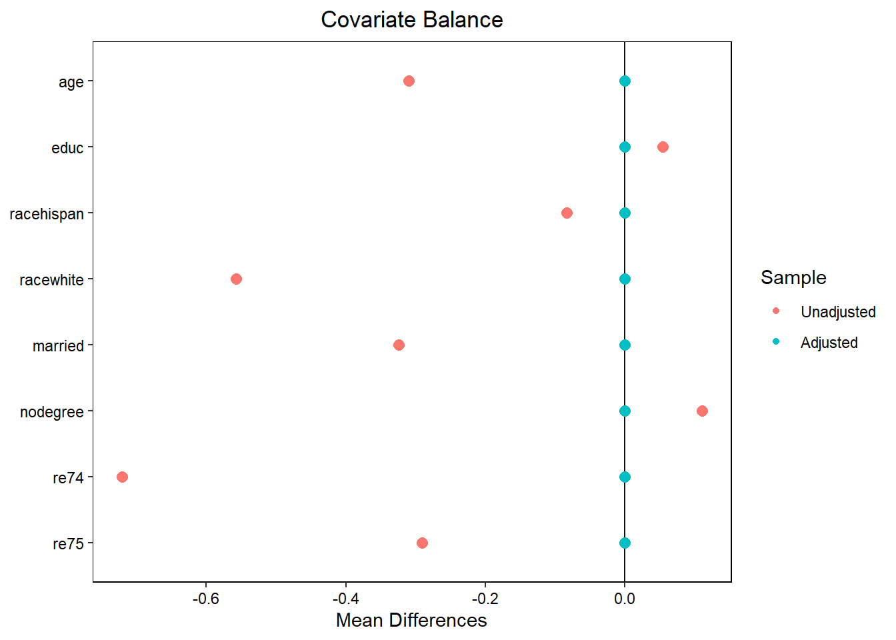
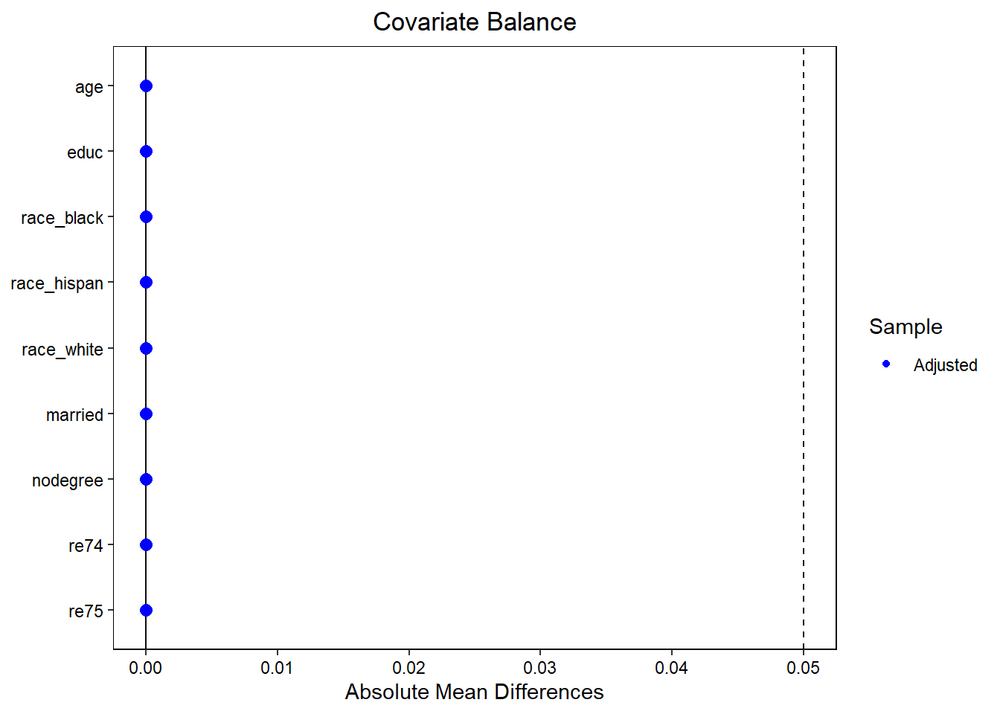
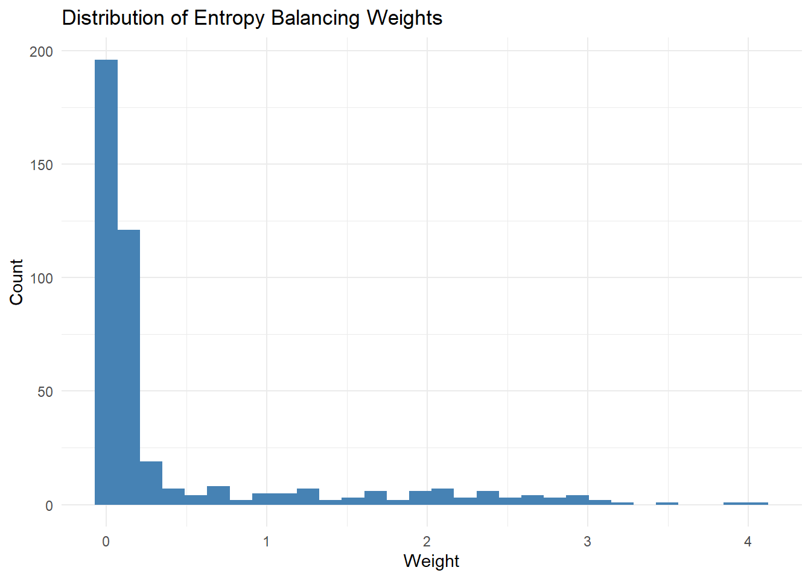

library(tidyverse, quietly = TRUE)
library(ebal, quietly = TRUE)
library(cobalt, quietly = TRUE)
# Download the lalonde data
data <- MatchIt::lalonde
# Prepare covariate matrix (use model.matrix to handle factor variables)
X <- model.matrix(
~ age + educ + race + married + nodegree + re74 + re75,
data = data
)[, -1] # Remove intercept column
T_vec <- data$treat
# Fit entropy balancing
eb_fit <- ebalance(Treatment = T_vec, X = X)Converged within tolerance # Examine balance improvement
bal.tab(eb_fit, treat = T_vec, covs = X) # balance tableBalance Measures
Type Diff.Adj
age Contin. -0
educ Contin. -0
racehispan Binary 0
racewhite Binary -0
married Binary -0
nodegree Binary 0
re74 Contin. -0
re75 Contin. -0
Effective sample sizes
Control Treated
Unadjusted 429. 185
Adjusted 98.46 185love.plot(eb_fit, treat = T_vec, covs = X) # Love plot of standardized mean differencesWarning: Standardized mean differences and raw mean differences are present in the same
plot. Use the `stars` argument to distinguish between them and appropriately
label the x-axis. See `love.plot()` for details.
# Extract weights
data$weight <- 1 # Initialize all weights to 1
data$weight[data$treat == 0] <- eb_fit$w
# Verify balance
bal_check <- bal.tab(
treat ~ age + educ + race + married + nodegree + re74 + re75,
data = data,
weights = "weight",
method = "weighting",
stats = c("m", "v"),
thresholds = c(m = 0.05, v = 2)
)
print(bal_check)Balance Measures
Type Diff.Adj M.Threshold V.Ratio.Adj V.Threshold
age Contin. -0 Balanced, <0.05 0.4096 Not Balanced, >2
educ Contin. -0 Balanced, <0.05 0.6635 Balanced, <2
race_black Binary 0 Balanced, <0.05 .
race_hispan Binary 0 Balanced, <0.05 .
race_white Binary -0 Balanced, <0.05 .
married Binary -0 Balanced, <0.05 .
nodegree Binary 0 Balanced, <0.05 .
re74 Contin. -0 Balanced, <0.05 1.3265 Balanced, <2
re75 Contin. -0 Balanced, <0.05 1.3351 Balanced, <2
Balance tally for mean differences
count
Balanced, <0.05 9
Not Balanced, >0.05 0
Variable with the greatest mean difference
Variable Diff.Adj M.Threshold
re74 -0 Balanced, <0.05
Balance tally for variance ratios
count
Balanced, <2 3
Not Balanced, >2 1
Variable with the greatest variance ratio
Variable V.Ratio.Adj V.Threshold
age 0.4096 Not Balanced, >2
Effective sample sizes
Control Treated
Unadjusted 429. 185
Adjusted 98.46 185# Visualize balance
love.plot(bal_check,
threshold = 0.1,
abs = TRUE,
var.order = "unadjusted",
colors = c("red", "blue"))Warning: Unadjusted values are missing. This can occur when `un = FALSE` and `quick =
TRUE` in the original call to `bal.tab()`.Warning: `var.order` was set to "unadjusted", but no unadjusted mean differences were
calculated. Ignoring `var.order`.Warning: Standardized mean differences and raw mean differences are present in the same
plot. Use the `stars` argument to distinguish between them and appropriately
label the x-axis. See `love.plot()` for details.
# Check weight distribution
summary(data$weight[data$treat == 0]) Min. 1st Qu. Median Mean 3rd Qu. Max.
0.008086 0.039651 0.078746 0.431236 0.228944 4.062430 ggplot(data %>% filter(treat == 0),
aes(x = weight)) +
geom_histogram(bins = 30, fill = "steelblue") +
labs(title = "Distribution of Entropy Balancing Weights",
x = "Weight", y = "Count") +
theme_minimal()
# Estimate treatment effect
att_model <- lm(re78 ~ treat,
data = data,
weights = weight)
# Robust standard errors
library(sandwich, quietly = TRUE)
library(lmtest, quietly = TRUE)
coeftest(att_model, vcov = vcovHC(att_model, type = "HC3"))
t test of coefficients:
Estimate Std. Error t value Pr(>|t|)
(Intercept) 5075.88 596.35 8.5116 <2e-16 ***
treat 1273.26 831.88 1.5306 0.1264
---
Signif. codes: 0 '***' 0.001 '**' 0.01 '*' 0.05 '.' 0.1 ' ' 1# Alternative: Use WeightIt package
# library(WeightIt)
# W <- weightit(treat ~ age + educ + race + married + nodegree + re74 + re75,
# data = data,
# method = "ebal",
# estimand = "ATT")
# summary(W)
# bal.tab(W, stats = c("m", "v"), thresholds = c(m = 0.05))
# Estimate with marginaleffects
# library(marginaleffects)
# fit <- lm(re78 ~ treat,
# data = data,
# weights = W$weights)
# avg_comparisons(fit, variables = "treat",
# vcov = "HC3")